Sitronglaserte Blåbærmuffins, oppskrift som er enkel å følge
Jeg må innrømme at muffins aldri har vært en favoritt hos meg. Inntil for et par år siden. Da smakte jeg noen nydelige blåbærmuffins på en cafe i Los Angeles..Siden har jeg prøvd meg gjennom utallige oppskrifter for å finne tilbake til disse gode muffinsene, men uten hell. Jeg bestemte meg for en tid tilbake å prøve en siste gang. Jeg satt en hel søndags ettermiddag, trålet gjennom oppskrifter helt til jeg fant frem til denne. Duverden! var det første jeg tenkte da første munnfull beveget seg nedover halsen min. Jeg fant den! Jeg fant oppskriften. Og her er den:
Til 12 muffins…
4,7 dl mel
1 ss bakepulver
1/2 ts salt
1 stort egg
2,3 dl sukker
4 spiseskjeer smeltet usaltet smør
3 dl seterrømme
3,5-4 dl frosne blåbær (eller ferske, om du har tilgang…)
Stekes på 175 grader, så du kan begynne med å sette på ovnen… dette tar nemlig ikke lang tid.
(En sitron og sukker til glasuren)
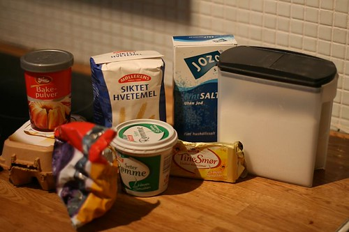
Her er rollelisten, (fra venstre) egg, bakepulver, frosne blåbær, hvetemel, seterrømme, usaltetsmør, salt og sukker.
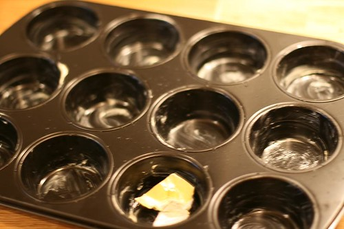
Smør muffinsformen..
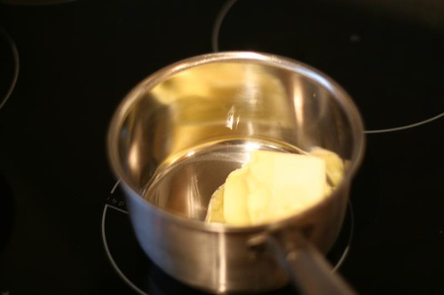
Smelt smøret, og la det avkjøle seg litt..
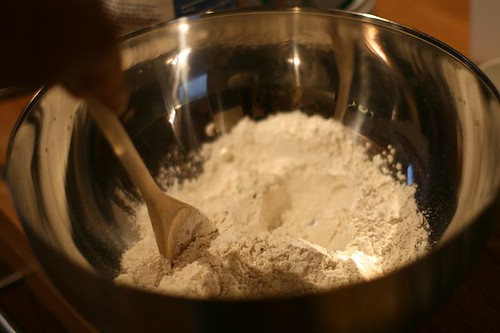
Bland mel, bakepulver og salt i en bolle
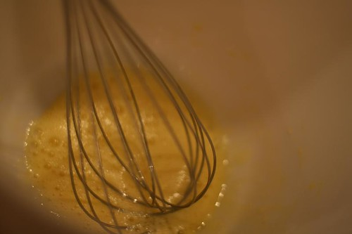
Visp egget i en annen bolle i ca 30 sekunder, til det er godt blandet og har en fin jevn gul farge.
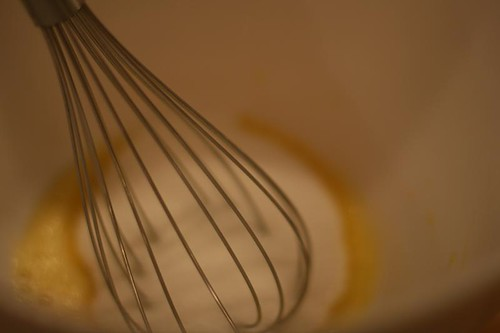
Tilsett sukker, og bland videre til du får en tykk røre (ca 30 sek)
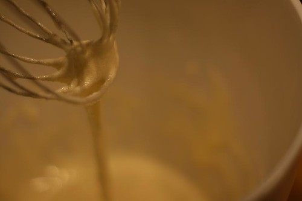
Slik skal det se ut.
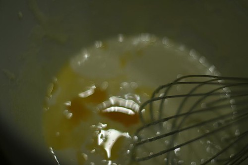
Tilsett det smeltede smøret i tre omganger, og rør mellom til røren blir jevn..
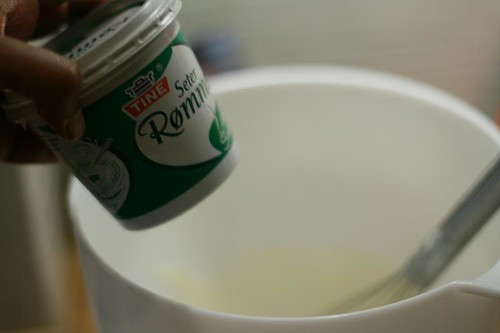
Finn frem rømmen…
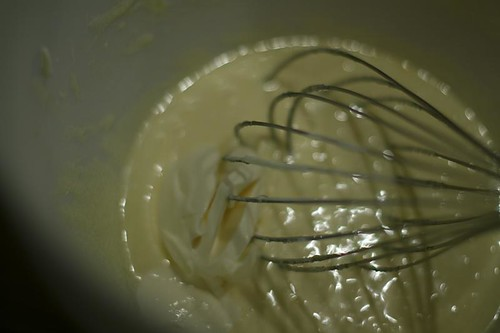
Rør den inn i to omganger, dvs først halvparten så resten..
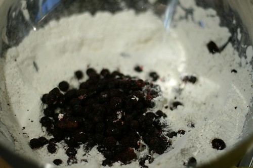
I den tørre bollen, med melet og bakepulveret, tilsetter du nå blåbærene.. Disse er frosne…
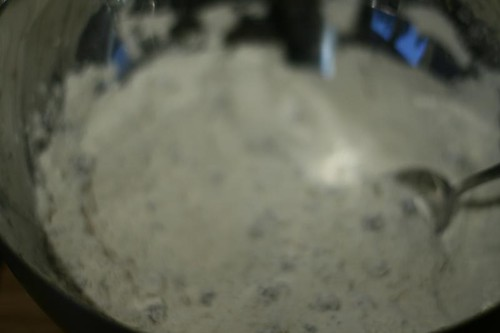
Rør forsiktig inn med en skje… forsiktig forsiktig
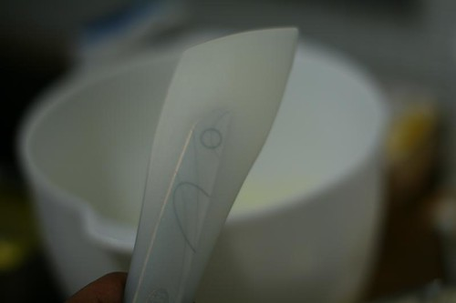
Finn frem en slikkepott….
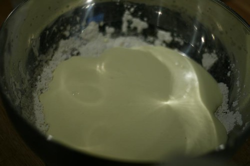
Hell over den flytende røren av smør, rømme egg og sukker-..
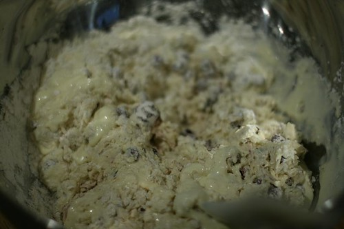
Bland forsiktig med slikkepotten
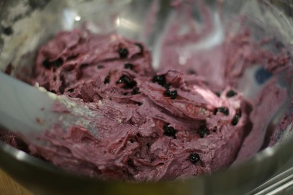
Her har jeg blandet litt for mye, du skal så vidt blande ingrediensene og prøve å unngå for mye farge. Men dette funker fint, altså. Bare ikke mørkere farge enn dette.
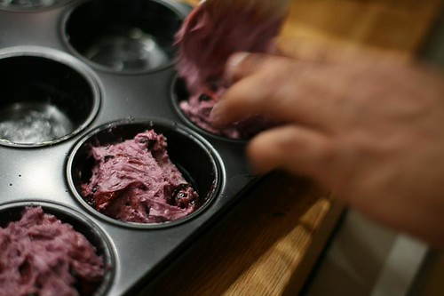
Finn frem en tresleiv, og fyll formen
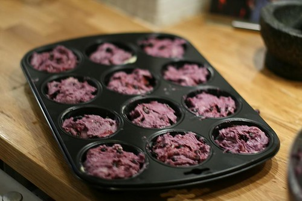
Slik, nå er det ca like mye i hver form..
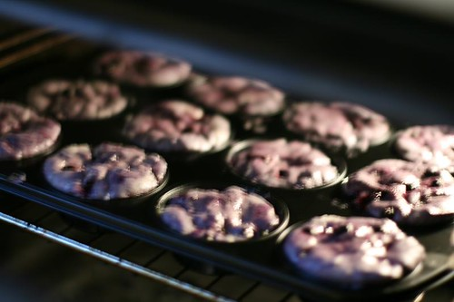
Sett den inn i ovnen på midterste nivå… i 25 minutter-30 minutter
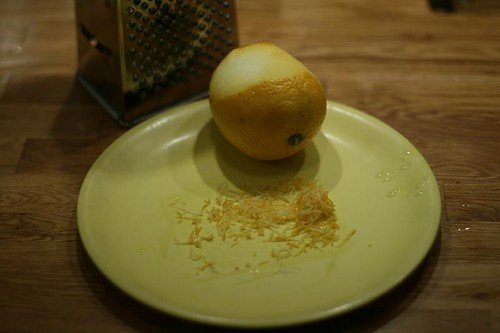
Nå skal vi lage glasuren… Skrell en sitron til du har ca en toppet teskje med sitronskall
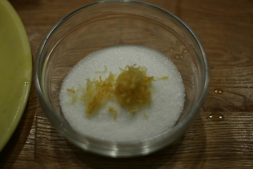
Putt skallet i en skål med ca 1 dl sukker
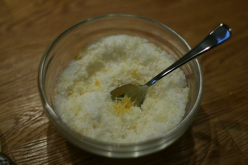
Bland sukker og sitronskall i den lille skålen
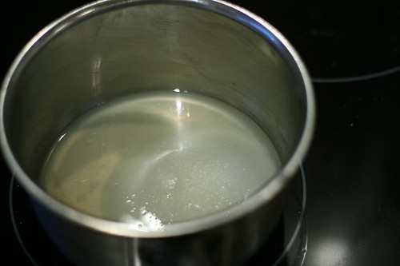
Skvis sitronen(e) til du har ca 0,5 dl sitronsaft. Bland dette med 0,5 dl sukker i en liten kasserolle, og kok opp over medium varme
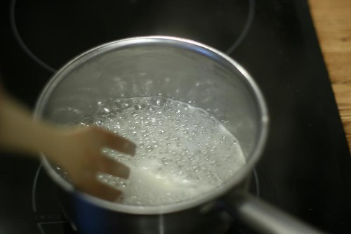
Rør konstant, til sukkeret oppløses, og det danner seg en tykk sirup
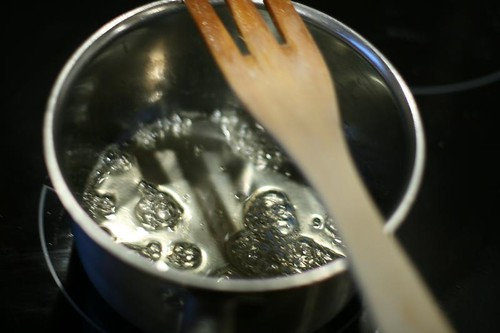
Se, den blir tykk og fin..
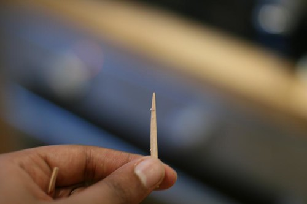
Sjekk muffinsen etter 25 min, og ser tannstiker slik ut (bare noen fuktige smuler)etter at du har dyttet den inn til midten av en muffin, så er de klare..
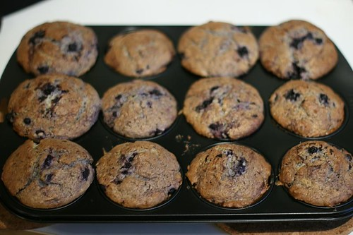
Voila! La dem hvile i 5 minutter…
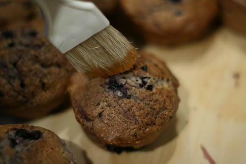
Pensle muffinsen med sitronlaken
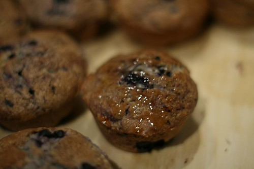
Slik…..
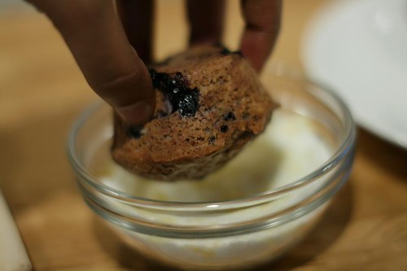
Dyppe hver og en i sukkerbollen med sitronskall
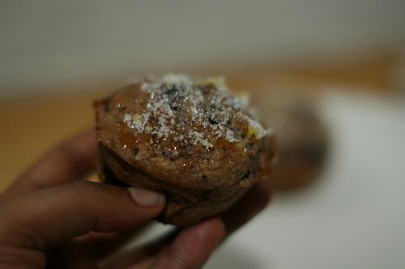
Hmmm…
Og der har du 12 nydelige muffins du kan kose deg med..
Lykke til!
Og legg igjen en kommentar dersom du prøver dem- Kom med innspill, så vi kanskje kan gjøre dem enda bedre.. ?
Legg deg til på mailinglista mi under, så får du beskjed hver gang jeg legger ut en ny oppskrift (veldig spamfri):